LRTA 1200 class
LRT-1 3rd generation train
The LRTA 1200 class is the third-generation class of high-floor light rail vehicles (LRV) of the Manila LRT Line 1, built by Kinki Sharyo and Nippon Sharyo. Purchased as part of the second phase of the capacity expansion of the line, the trains entered service in December 2006.
| LRTA 1200 class | |
|---|---|
|
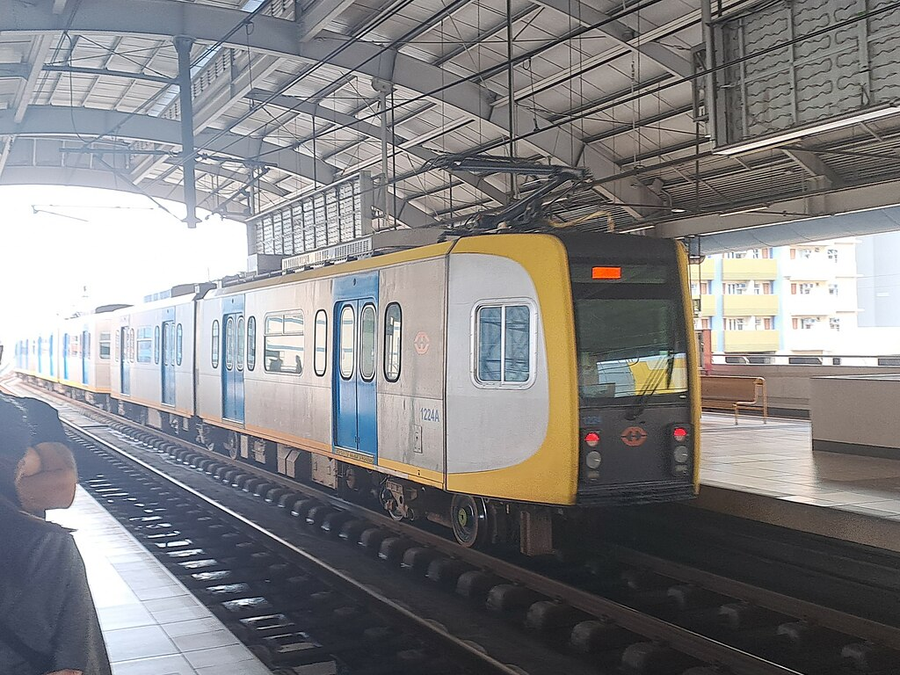
A Kinki Sharyo-built 1200 class train at FPJ station in August 2023
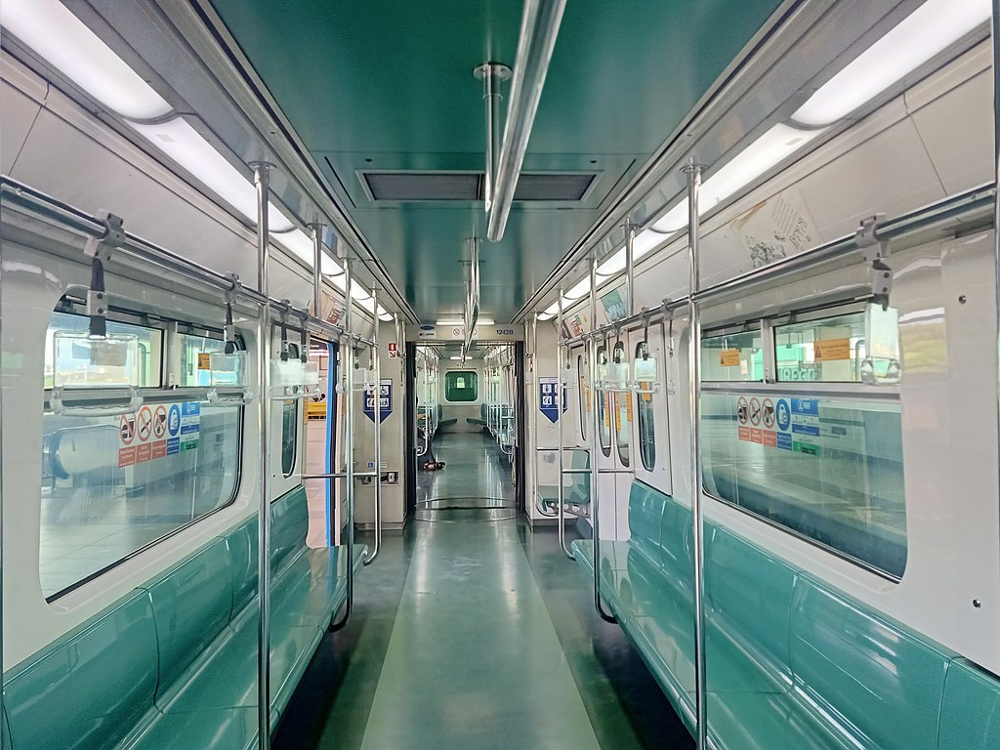
Interior of the train captured in February 2022. This LRV was built by Nippon Sharyo
|
|
| Stick type | Light rail vehicle |
| In service | 2006-present |
| Manufacturer |
Kinki Sharyo
Nippon Sharyo |
| Assembled at |
Osaka, Japan[note 1]
Toyokawa, Aichi, Japan[note 2] |
| Constructed | 2004–2006 |
| Entered service | December 11, 2006 |
| Number built | 48 vehicles (12 sets) |
| Number in service | 44 vehicles (11 sets) |
| Formation | 4 cars per trainset (Mc–M–M–Mc) |
| Fleet numbers | 1201-1248 |
| Capacity | 1,388 passengers
(272 seats) |
| Operator(s) |
|
| Depot(s) | Baclaran |
| Line(s) served | LRT Line 1 |
| Specifications | |
| Car body construction | Stainless steel |
| Train length | 105.7 m[note 3] |
| Car length |
Driving cars: 26.35 m
Intermediate cars: 26.5 m |
| Width | 2.59 m |
| Height | 3.91 m |
| Floor height | 920 mm |
| Platform height | 690 mm |
| Entry | Step |
| Doors | Double-leaf 1.5 m × 1.9 m pocket-type; 4 per side |
| Articulated sections | 2 per PRV |
| Wheel diameter |
New: 660 mm
Worn: 600 mm |
| Wheelbase |
Per bogie: 1.9 m
Bogie centers: 10 m Total: 20 m |
| Maximum speed |
Design: 80 km/h
Service: 60 km/h |
| Weight |
Driving car: 37.4 t
Intermediate car: 36.5 t |
| Axie load | 10.3 t |
| Steep gradient | 4% |
| Traction system | Mitsubishi Electric MAP-112-A55VD173 IGBT–VVVF Inverter |
| Traction motors | 4 × 105 kW 3-phase AC induction motor |
| Power output |
Per LRV: 420 kW
4-car trainset: 1.68 MW |
| Transmission | Two-stage reduction drive |
| Acceleration | 1.1 m/s² |
| Deceleration | 1.3 m/s² |
| Auxiliaries |
440 V AC IGBT static inverter
110 V DC batteries |
| HVAC | Roof-mounted duct-type air conditioning (2 units per LRV) |
| Electric system(s) | 750 V DC overhead wire |
| Current collector(s) | Single-arm pantograph |
| UIC classification | Bo′+2′+Bo′ |
| Wheels driven | 8 out of 12 per LRV |
| Bogies | Inside-frame type |
| Minimum turning radius | 25 m |
| Breaking system(s) | Knorr-Bremse regenerative and electro-pneumatic |
| Safety system(s) |
|
| Coupling system(s) | Semi-permanent |
| Multiple working | Within type |
| Seating | Longitudinal |
| Track gauge |
1,435 mm
Standard track gauge |
Background and purchase
With the completion of the initial capacity expansion of the LRT Line 1, its capacity was raised by half with the introduction of seven four-car trains and the upgrading of the existing two-car trains to three cars in 1999. However, its capacity was expected to become insufficient once the railway network in Metro Manila was completed in 2004 with the full opening of the LRT Line 2.On April 7, 2000, the Japan Bank for International Cooperation (JBIC) extended a ₱8.893 billion loan to finance the second phase of the capacity expansion project. While existing rolling stock were refurbished, twelve more four-car trains were purchased, in conjunction with other upgrades in signaling, telecommunications, and existing railway tracks as well as upgrades at stations and the depot.
Two firms bidded for the project: Kanematsu and Kawasaki Steel Corporation, and the joint venture of Sumitomo Corporation and Itochu. Marubeni was disqualified from the bidding but questioned the technicalities of the bidding procedure. However, delays were encountered in the bidding process, with senator Francisco Tatad claiming on March 21, 2004, that "unconfirmed reports" reaching him disclosed that groups identifying themselves with the President of the Philippines (Gloria Macapagal Arroyo at the time) attempted to extort US$1 million from each bidder supposedly as campaign funds for the May 2004 elections. This, according to Tatad, limited the bidders to the two aforementioned firms. His claims were denied by LRTA administrator Pacifico Fajardo, as well as the Department of Transportation. Fajardo later claimed that JBIC posed "no objection" to the bidding, and said that it was conducted with transparency.
After a delay of more than three years since 2001, Sumitomo and Itochu won the contract and was given the go-ahead in March 2005. Following this, they signed a construction contract with Kinki Sharyo and Nippon Sharyo to manufacture the light rail vehicles.
Production and commissioning
In December 2005, officials from the Light Rail Transit Authority and Manila Tren Consortium—the project consultant of the capacity expansion project, inspected the full-scale mock-up model at Kinki Sharyo's factory in Osaka. It was then displayed at the line's depot in Baclaran in March 2006.After delivery in the third quarter of 2006, the third-generation trains underwent mainline test runs in the late evening, during non-operating hours. Some scheduled tests in late September 2006 were cancelled due to Typhoon Xangsane.
On December 9, 2006, at a ceremony in Baclaran, Japanese Prime Minister Shinzo Abe and President Gloria Macapagal Arroyo inaugurated the third-generation 1200 class trains. These were then deployed for revenue operations two days later. The trains raised the line's capacity from 27,000 passengers per hour per direction to 40,000 passengers per hour per direction.
Themed trains
On September 6, 2018, a 3G trainset was decorated with a special Gabay Guro decoration to celebrate the National Teachers' Month in the Philippines. The decoration has a library-themed look with images of books. The special themed train was launched on that date and ended a year later.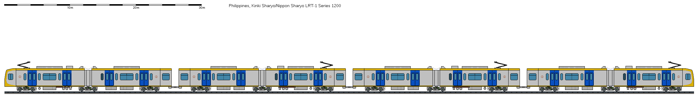
A scale model drawing of the LRTA 1200 class in a 4-car formation
Like the 1100 class, the 1200 class shares the 6-axle rigid body LRV design consisting of two articulated cars.
Car body
The car body has a length of 26 meters without couplers, a width of 2.59 meters, and a height of 3.91 meters. The train car body is made of beadless lightweight stainless steel, with composite materials on the indoor panels and aluminum on the inner bone to reduce weight.Each light rail vehicle has two roof-mounted air-conditioning units that has a cooling capacity of 41,000 kilocalories. In total, there are eight air-conditioning units in a four-car train set.
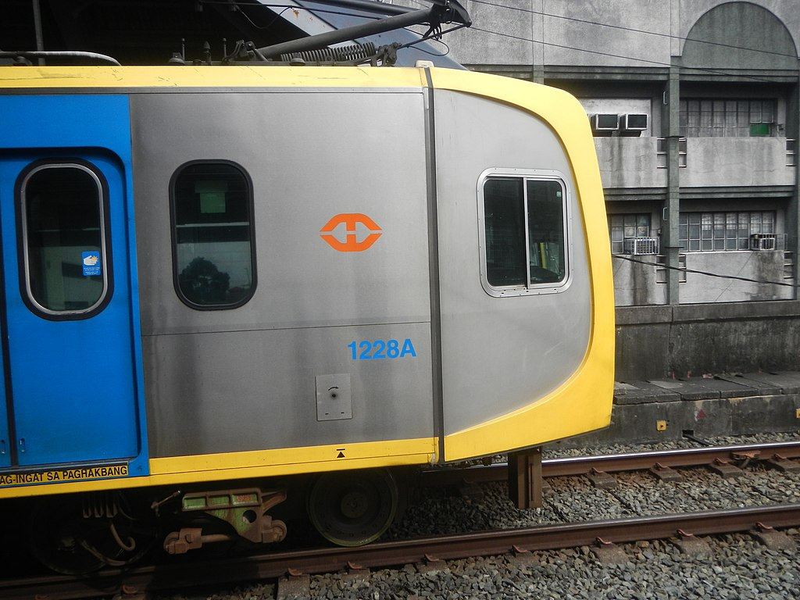
A 1200 class train (end cab) at 5th Avenue station in October 2016.
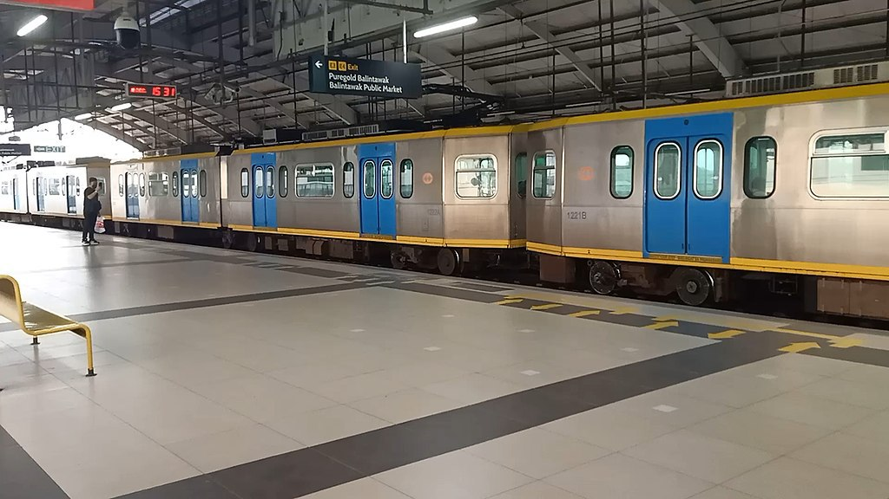
A 1200 class train at Balintawak station in December 2021.
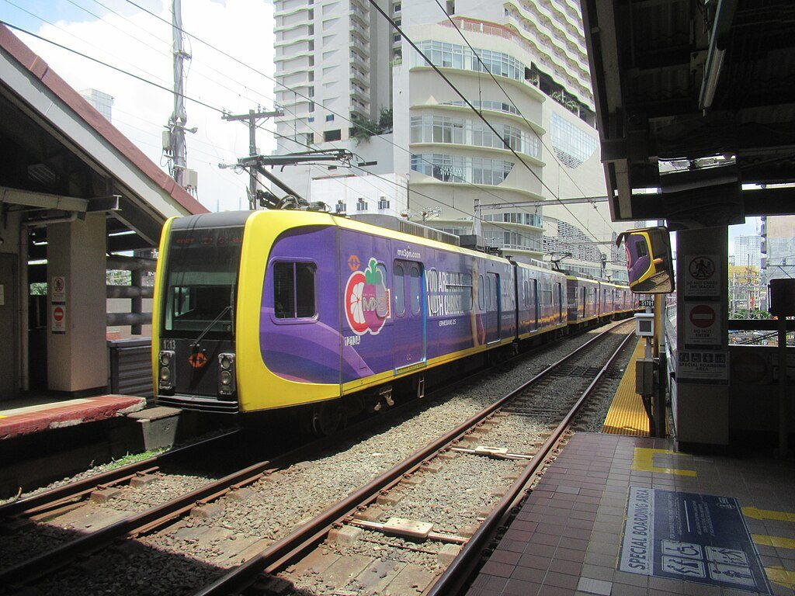
A 1200 class train with wrap advertising at Vito Cruz in August 2023.
Interior
The interior is color-toned based on light and dark two-color green in the seats to complement the landscape of Manila. Seats are made of fiber reinforced plastic and has an aluminum bracket type cantilever longitudinal seat for reducing weight. Seating and grip sticks are designed to have ergonomic dimensions, aside from equipment arrangement inside the cab. A wheelchair-compatible space is provided beside the gangway of the intermediate car, alongside an equipped fire extinguisher.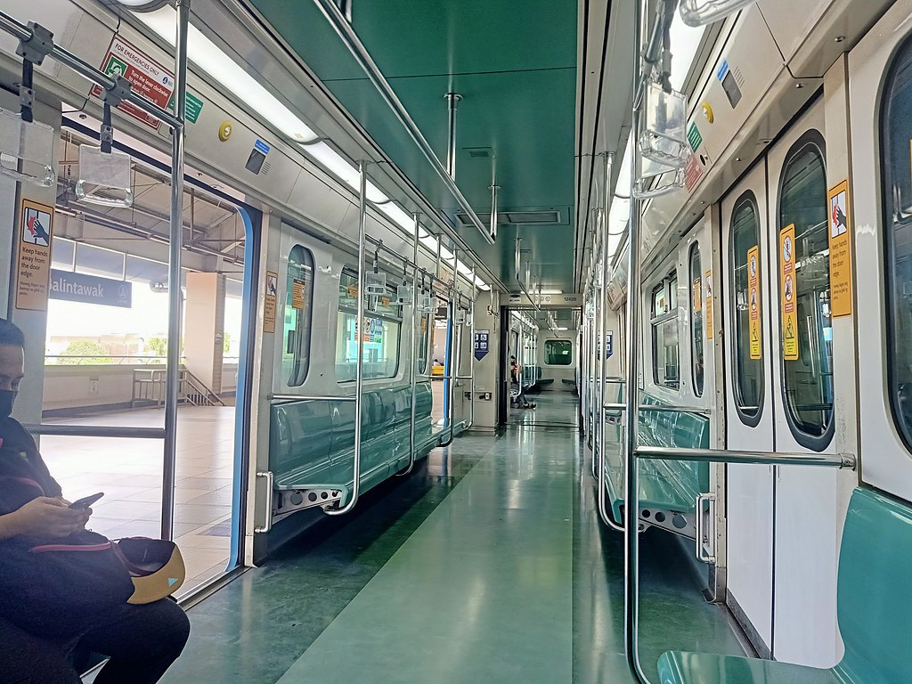
1200 class interior with new door stickers
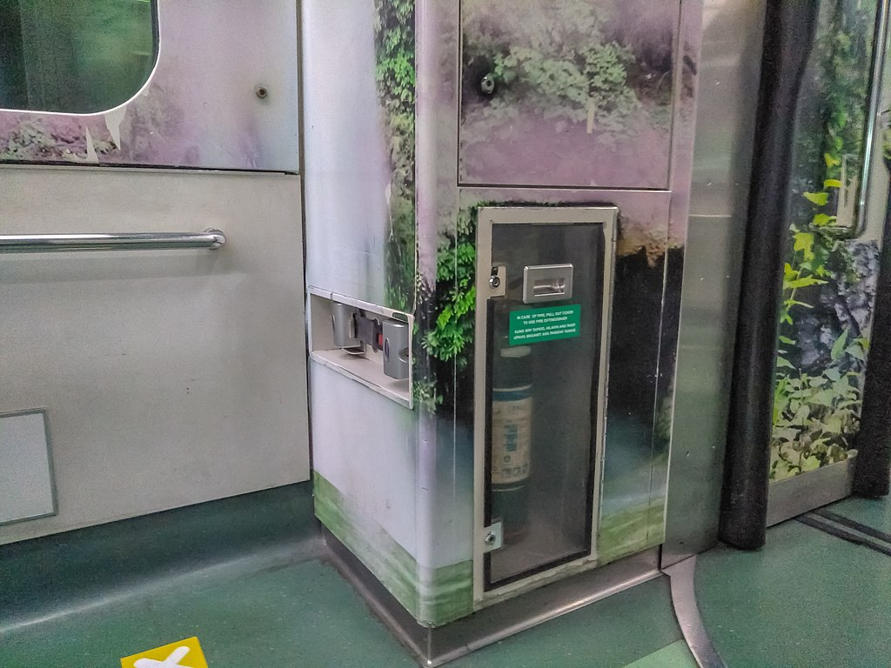
Wheelchair strap and space, and fire extinguisher
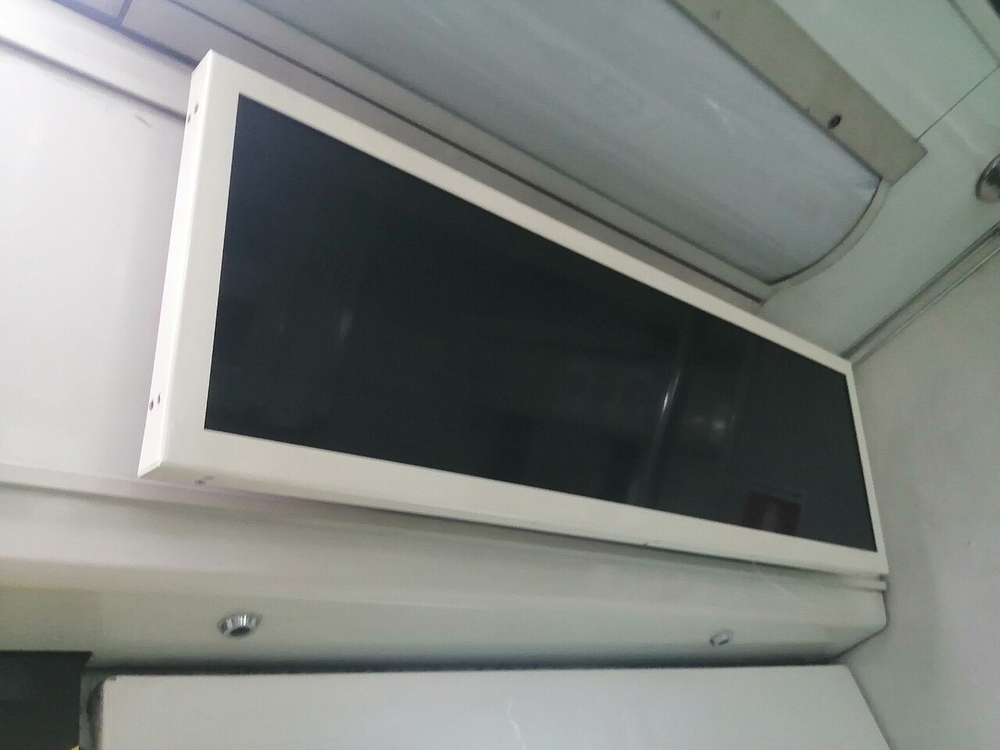
The now-unused Tube information system
Electrical
Each LRV consists of four totally enclosed, self-ventilated 3-phase AC induction motors, driven by variable-voltage/variable-frequency drive (VVVF) inverters. Auxiliary power is sourced from 440-volt alternating current static inverters and 110-volt direct current batteries.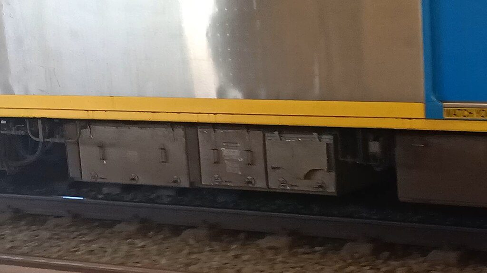
Mitsubishi Electric VVVF inverter of a 1200 class LRV.
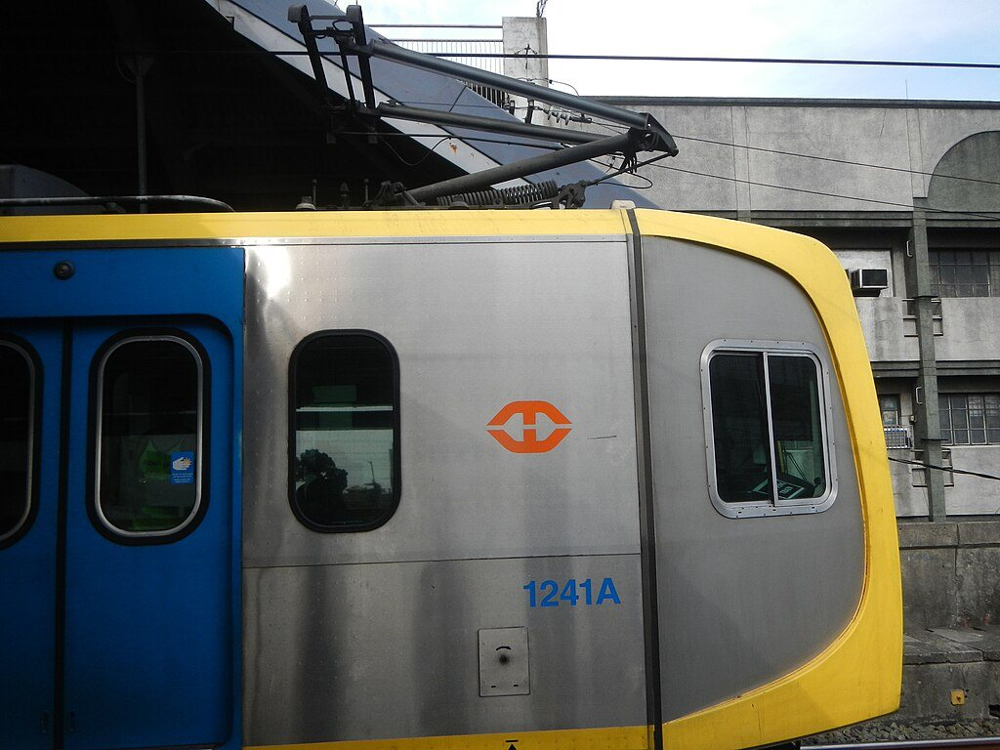
A single-arm pantograph above the driving car of the 1200 class
Mechanical and braking
Each LRV has three inside-frame bogies, similar to the 1000 class. The bogies consist of two motorized bogies at the ends of the LRV and one shared trailer bogie under the articulation. The primary suspension is a chevron rubber spring, while the secondary suspension is an air suspension, similar to the 1100 class. Semi-permanent couplers are present in the ends of each light rail vehicle except the driving cab section of the MC car.The 1200 class employs a regenerative and electronically controlled pneumatic braking system manufactured by Knorr-Bremse. The resistors are mounted on the roof for backup regenerative brakes. Each VVVF controller is equipped with an Electronic Command Braking Device (ECBD). Disc brakes are present on the bogies.
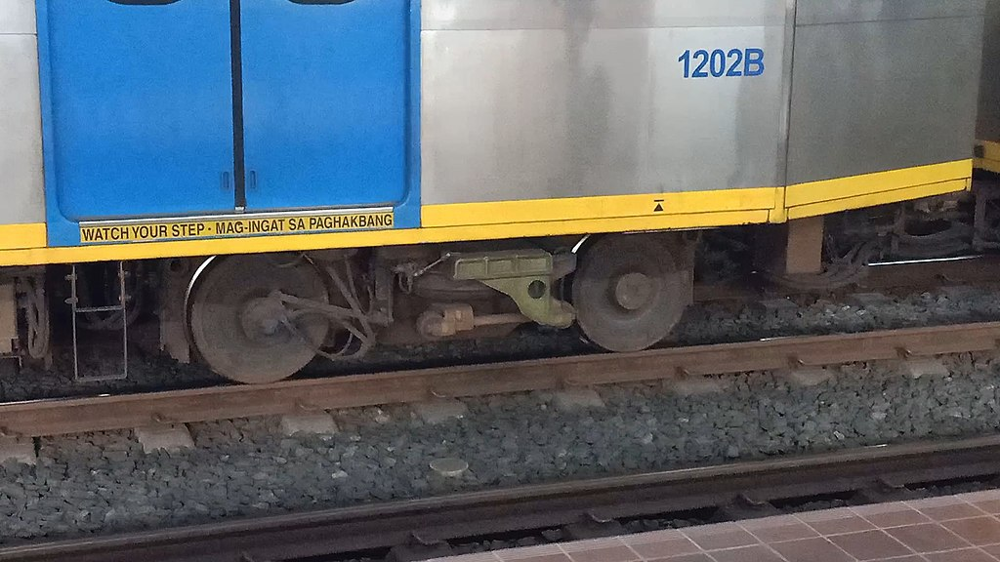
The inside-frame bogie of a 1200 class LRV
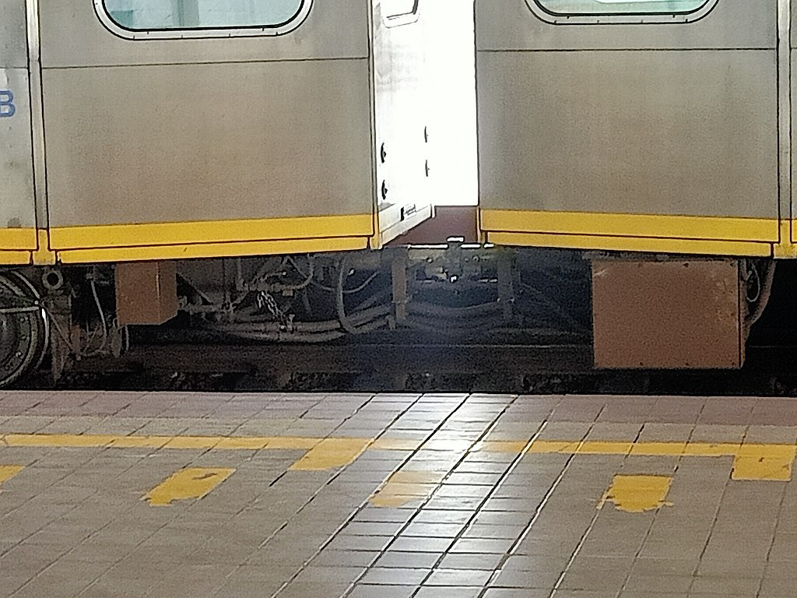
Semi-permanent couplers of the 1200 class
The configuration of a four-car trainset is Mc–M–M–Mc. Mc denotes a driving car while M denotes an intermediate car.
| Car type | Mc | M | |||
|---|---|---|---|---|---|
| A | B | A | B | ||
| Quantity | 2 | 2 | |||
| Control cab | Yes | No | No | No | |
| VVVF inverter | Yes | Yes | Yes | Yes | |
| Auxiliary inverter | Yes | Yes | Yes | Yes | |
| Pantograph | Yes | No | Yes | No | |
| Car length | 26.35 m | 26.5 m | |||
| Capacity | Seated | 66 | 70 | ||
| Standing | 272 | 286 | |||
| Total | 338 | 356 | |||
Legend
| Either out of service, scrapped, or decommissioned |
| Set No. | 1 | 2 | 3 | 4 | Manufacturer | Notes |
|---|---|---|---|---|---|---|
| 1 | 1201 | 1202 | 1203 | 1204 | Kinki Sharyo | — |
| 2 | 1205 | 1206 | 1207 | 1208 | ||
| 3 | 1209 | 1210 | 1211 | 1212 | Nippon Sharyo | |
| 4 | 1213 | 1214 | 1215 | 1216 | ||
| 5 | 1217 | 1218 | 1219 | 1220 | Kinki Sharyo | |
| 6 | 1221 | 1222 | 1223 | 1224 | ||
| 7 | 1225 | 1226 | 1227 | 1228 | Nippon Sharyo | |
| 8 | 1229 | 1230 | 1231 | 1232 | ||
| 9 | 1233 | 1234 | 1235 | 1236 | Kinki Sharyo | 1233–1234 re-configured to 1246–1245 |
| 10 | 1237 | 1238 | 1239 | 1240 | — | |
| 11 | 1241 | 1242 | 1243 | 1244 | Nippon Sharyo | |
| 12 | 1245 | 1246 | 1247 | 1248 | 1246–1245 re-configured to 1233–1234 |
- On June 24, 2010, two trains (1000 and 1200 class) collided at Balintawak station. As a result, LRVs 1248 and 1247 sustained damage. There were plans to restore it, but the involved cars remain idle as of 2026.
- On February 18, 2011, two trains (1000 and 1200 class) collided at the reversing tracks about a kilometer east of Fernando Poe Jr. station. There were no passengers on board, and no injuries were reported. A formal LRTA investigation concluded that the accident was caused by a combination of an automatic track switch failure and driver negligence. The operator was found to be using a mobile phone while overspeeding at 61 km/h, well above the designated 40 km/h speed limit for the reversing loop zone.
- On May 23, 2015, thousands of passengers were stranded after two trains (1000 and 1200 class) collided near the Monumento station. A train driver was hurt after the impact caused his head to slam into the dashboard of the train. The accident, later revealed to be caused by power fluctuation that affected the signaling system, forced passengers to alight from the station until services was restored around 1:00 PM at the same day.
- On January 15, 2020 at 6:45 AM, a 32-year-old female passenger jumped onto the northbound tracks at Doroteo Jose station as a 1200 class train was approaching. The train operator managed to slow down, but the passenger sustained head lacerations and bruises from the impact of the fall. Operations were delayed as security and response teams worked to pull the victim out. The person was initially rushed to the Jose Reyes Memorial Medical Center before being transferred to the Medical Center Manila for further scans and examination. Operations normalized later that morning after the tracks were cleared.
- On August 17, 2022 at 4:40 AM, a male passenger jumped onto the northbound tracks at Monumento station just as a 1200 class train set (LRVs 1221-1222-1223-1224) was approaching. The train sideswiped the passenger, causing his right foot to be severed. In response to the incident, LRMC immediately implemented a provisional service, limiting train operations between Baclaran and Blumentritt stations. Emergency responders successfully rescued the conscious victim from the track bed, and he was initially rushed to a local Caloocan hospital before being transferred to the Jose Reyes Memorial Medical Center and later to the Philippine General Hospital. Full line operations were officially restored between 5:59 AM and 6:20 AM after the tracks were cleared.
- On September 29, 2025 at 9:22 AM, a 1200 class LRV experienced a technical fault at the Gil Puyat station, causing the 25 km/h speed restriction in the line. By 9:29 AM, the situation escalated into a full
stop for safety
protocol, temporarily halting all train movements and freezing passenger entry across all stations while engineering teams conducted emergency troubleshooting. Full line operations were safely restored at 10:37 AM after the faulty LRV was cleared from the tracks. - On October 23, 2025 at 10:02 AM, a northbound 1200 class train at the Central Terminal station was forced to unload its passengers after smoke occurred from a mobile phone left on the floor of a train car. Out of panic, a passenger had abandoned the smoking device. The train driver immediately removed the phone to prevent further escalation. While a thorough inspection of the train car revealed no damage or secondary threats, the vehicle was briefly taken out of service to ensure commuter safety. The LRMC reported that the swift response prevented any major disruptions to the overall operations of the line.